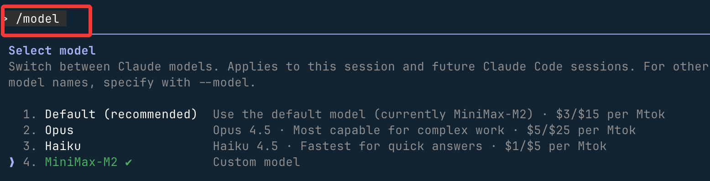
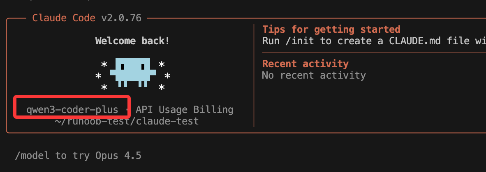
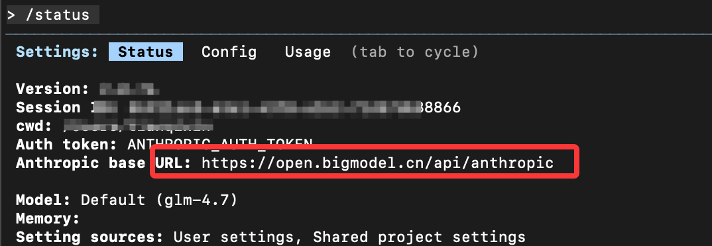

Claude Code API 設定
Claude を中国国内で使う場合、API は実はあまり友好的ではありません。Claude 公式モデルの他に、他の AI モデルも使えますか？
この章では、複数の中国国内の主要 AI モデルの API を設定して、Claude Code でサポートさせる方法を詳しく解説します：
| ベンダー / ブランド | 概要 | API 申請ページ（クリックで移動） |
|---|---|---|
| DeepSeek（国産・高コストパフォーマンス） | 公式モデル： deepseek-v4-flash deepseek-v4-pro deepseek-chat (2026/07/24 に廃止予定) deepseek-reasoner (2026/07/24 に廃止予定) |
https://platform.deepseek.com/api_keys |
| アリババ百錬（通義千問） | 阿里雲の大規模モデル統一エントリ。千問、GLM、Kimi、MiniMax などの最新バージョンモデルをサポート | https://bailian.console.aliyun.com |
| GLM（智譜清言） | 清華大学系の ChatGLM シリーズ。GLM-4、GLM-3-Turbo などをサポート | https://open.bigmodel.cn |
| MiniMax | 国産マルチモーダル。テキスト、音声、画像の混合呼び出しに対応 | https://platform.minimaxi.com |
対応するコンソールに入ったら、登録/ログイン → 実名認証の完了 → API Key の作成で、すぐに呼び出しを開始できます。
API 管理ツール
プラットフォームが多くなると設定が面倒になります。サードパーティツールの CC Switch を使用すると、これらの人気ツールの API 設定を簡単に管理できます：https://github.com/farion1231/cc-switch/Windows / macOS / Linux すべて対応。
CC Switch は Claude Code / Codex / Gemini CLI の全方位アシスタントツールです。
CC Switch を使うと、これらの人気ツールの API 設定を簡単に管理できます。まるで開発ツールボックスにスマート整理アシスタントが加わったかのように、すべてのツールの設定を一元管理できます。

各プラットフォームのインストールパッケージのダウンロード先：https://github.com/farion1231/cc-switch/releases。

具体的な操作・設定は記事を参照してください：https://www.example.com/ai-agent/cc-switch.html
面倒でなければ、以下の内容を参考にして自分で設定することもできます。
DeepSeek を Claude Code に接続
必要な情報：
API key： https://platform.deepseek.com/api_keysAPI keys を申請します。
BASE_URL：API リクエストの URL はhttps://api.deepseek.com/anthropic。
環境変数での設定
Linux / Mac ユーザーは以下のコマンドを実行して DeepSeek Anthropic API の環境変数を設定します。API Key はDeepSeek Platformで取得：
export ANTHROPIC_BASE_URL=https://api.deepseek.com/anthropic export ANTHROPIC_AUTH_TOKEN=<你的 DeepSeek API Key> export ANTHROPIC_MODEL=deepseek-v4-pro[1m] export ANTHROPIC_DEFAULT_OPUS_MODEL=deepseek-v4-pro[1m] export ANTHROPIC_DEFAULT_SONNET_MODEL=deepseek-v4-pro[1m] export ANTHROPIC_DEFAULT_HAIKU_MODEL=deepseek-v4-flash export CLAUDE_CODE_SUBAGENT_MODEL=deepseek-v4-flash export CLAUDE_CODE_EFFORT_LEVEL=max
Windows ユーザーは以下を実行：
$env:ANTHROPIC_BASE_URL="https://api.deepseek.com/anthropic" $env:ANTHROPIC_AUTH_TOKEN="<你的 DeepSeek API Key>" $env:ANTHROPIC_MODEL="deepseek-v4-pro[1m]" $env:ANTHROPIC_DEFAULT_OPUS_MODEL="deepseek-v4-pro[1m]" $env:ANTHROPIC_DEFAULT_SONNET_MODEL="deepseek-v4-pro[1m]" $env:ANTHROPIC_DEFAULT_HAIKU_MODEL="deepseek-v4-flash" $env:CLAUDE_CODE_SUBAGENT_MODEL="deepseek-v4-flash" $env:CLAUDE_CODE_EFFORT_LEVEL="max"
注意：モデル設定には [1m] を追加し、思考強度を max に設定することを忘れないでください。これによりフルパワーで動作させることができます。
パラメータの説明：
最初の3列（パラメータ名 / サンプル値 / 機能説明）にまとめると以下の通りです：
| パラメータ名 | サンプル値 | 機能説明 |
|---|---|---|
ANTHROPIC_BASE_URL |
https://api.deepseek.com/anthropic |
API ゲートウェイアドレスを指定し、Anthropic SDK リクエストを DeepSeek へ転送します |
ANTHROPIC_AUTH_TOKEN |
<你的 DeepSeek API Key> |
API 認証トークン。DeepSeek サービスへのアクセスに使用します |
ANTHROPIC_MODEL |
deepseek-v4-pro |
デフォルトで使用するメインモデル |
ANTHROPIC_DEFAULT_OPUS_MODEL |
deepseek-v4-pro |
Claude Opus モデルをマッピング |
ANTHROPIC_DEFAULT_SONNET_MODEL |
deepseek-v4-pro |
Claude Sonnet モデルをマッピング |
ANTHROPIC_DEFAULT_HAIKU_MODEL |
deepseek-v4-flash |
Claude Haiku モデルをマッピング（軽量・高速） |
CLAUDE_CODE_SUBAGENT_MODEL |
deepseek-v4-flash |
サブ Agent が使用するモデル（通常は高速タスク用） |
CLAUDE_CODE_EFFORT_LEVEL |
max |
推論の強度と思考の深さを制御します |
その後、プロジェクトディレクトリに移動して claude コマンドを実行すると、すぐに使用を開始できます。
cd my-project claude

Claude Code を起動したら、DeepSeek を使用するように指定します：
claude --model deepseek-v4-pro
または対話モードで切り替えます：
> /model deepseek-v4-pro
/model と入力すると、サポートされているモデルを確認できます：

参考ドキュメント：https://api-docs.deepseek.com/zh-cn/guides/coding_agents
阿里百炼を Claude Code に接続
阿里雲百炼の通義千問シリーズモデルは Anthropic API 互換インターフェースをサポートしています。以下のパラメータを変更することで、Claude Code で通義千問シリーズモデルを呼び出すことができます。
ANTHROPIC_API_KEY（または ANTHROPIC_AUTH_TOKEN）：百炼 API Key に置き換えます。申請先：https://bailian.console.aliyun.com/cn-beijing/?tab=model#/api-key。
-
ANTHROPIC_BASE_URL：百炼の互換エンドポイントアドレスに置き換えますhttps://dashscope.aliyuncs.com/apps/anthropic。
リソースパックを直接購入すると、よりお得に利用できます：https://cn.aliyun.com/benefit?from_alibabacloud=&userCode=i5mn5r7m
-
モデル名：百炼がサポートするモデル名に置き換えます（例：qwen3-max、qwen3-coder-plus など）
macOS/Linux：
設定ファイルを作成して開く~/.claude/settings.json。
~ユーザーのホームディレクトリを表します。もし.claudeディレクトリが存在しない場合は、先に作成する必要があります。ターミナルでmkdir -p ~/.claude を実行して作成します。
設定ファイルを編集します：
vim ~/.claude/settings.json
YOUR_API_KEY を専用の API Key に置き換えます。
{
"env": {
"ANTHROPIC_AUTH_TOKEN": "YOUR_API_KEY",
"ANTHROPIC_BASE_URL": "https://dashscope.aliyuncs.com/apps/anthropic",
"ANTHROPIC_MODEL": "qwen3-coder-plus"
}
}
新しいターミナルを開き直して、環境変数の設定を有効にします。
Windows：
CMD で以下のコマンドを実行して、環境変数を設定します：
setx ANTHROPIC_AUTH_TOKEN "YOUR_API_KEY" setx ANTHROPIC_BASE_URL "https://dashscope.aliyuncs.com/apps/anthropic" setx ANTHROPIC_MODEL "qwen3-coder-plus"
YOUR_API_KEY をプラン専用の API Key に置き換えます。
新しい CMD ウィンドウを開き、以下のコマンドを実行して、環境変数が有効かどうかを確認します。
echo %ANTHROPIC_AUTH_TOKEN% echo %ANTHROPIC_BASE_URL% echo %ANTHROPIC_MODEL%
PowerShell で以下のコマンドを実行して、環境変数を設定します：
# 用套餐专属 API Key 替换 YOUR_API_KEY
[Environment]::SetEnvironmentVariable("ANTHROPIC_AUTH_TOKEN", "YOUR_API_KEY", [EnvironmentVariableTarget]::User)
[Environment]::SetEnvironmentVariable("ANTHROPIC_BASE_URL", "https://dashscope.aliyuncs.com/apps/anthropic", [EnvironmentVariableTarget]::User)
[Environment]::SetEnvironmentVariable("ANTHROPIC_MODEL", "qwen3-coder-plus", [EnvironmentVariableTarget]::User)
新しい PowerShell ウィンドウを開き、以下のコマンドを実行して、環境変数が有効かどうかを確認します。
echo $env:ANTHROPIC_AUTH_TOKEN echo $env:ANTHROPIC_BASE_URL echo $env:ANTHROPIC_MODEL
Claude Code で通義千問シリーズモデルを接続
会話中に、以下を実行します/model <モデル名>コマンドでモデルを切り替えます。
/model qwen3-coder-plus
プロジェクトのルートディレクトリに.claude/settings.jsonファイルを作成し、モデル設定情報を書き込むことで、恒久的に設定することもできます。

{
"env": {
"ANTHROPIC_MODEL": "qwen3-coder-plus",
"ANTHROPIC_SMALL_FAST_MODEL": "qwen-flash"
}
}
Claude を起動すると、設定情報を確認できます：

智譜大規模モデルを Claude Code に接続
このセクションでは ~/.claude/settings.json ファイルを使用して大規模モデルを設定します。開始前に公式プラットフォームで API key を取得する必要があります：GLM Coding Plan。
Claude Code 設定ファイル ~/.claude/settings.json を編集または新規作成し、その中の env フィールドを追加または変更します
# 注意替换里面的your_zhipu_api_key 为您上一步获取到的 API Key
{
"env": {
"ANTHROPIC_AUTH_TOKEN": "your_zhipu_api_key",
"ANTHROPIC_BASE_URL": "https://open.bigmodel.cn/api/anthropic",
"API_TIMEOUT_MS": "3000000",
"CLAUDE_CODE_DISABLE_NONESSENTIAL_TRAFFIC": 1
}
}claude を実行して Claude Code を起動し、以下を入力します/statusモデルの状態を確認します：

違う場合は、以下を入力して/configモデルを切り替えることができます。
 その他の拡張
その他の拡張